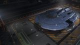

Макс. пассажиров (эконом)
~150
Четырнадцать дополнительных отсеков Caspian позволяют разместить один из крупнейших пассажирских комплексов в игре: около 150 мест экономкласса либо смешанный набор эконома, первого класса и люкса под полноценным щитом. Но это переоборудованный исследовательский корабль. Надбавки за комфорт лайнеров Saud Kruger нет, все места оплачиваются по стандартному тарифу. Корпус за примерно 189 млн кр. самый дорогой среди соперников. Корабль большой и способный, но специализированные лайнеры выгоднее для туризма.

Оценка от 1 до 100 отражает пригодность полностью модифицированной сборки для этой роли на фоне всех соперников. Подробнее: как оцениваются корабли.
Caspian Explorer представлен как флагман Saud Kruger для дальних экспедиций. Благодаря четырнадцати дополнительным отсекам это внушительный перевозчик на бумаге: в отсек класса 7 ставится щит, так что все отсеки класса 6 идут под каюты. Всего помещается около 150 мест экономкласса или смешанный набор: эконом, первый класс илюкс. Больше вмещают только Imperial Cutter и Beluga.
Подвох в том, чем корабль не является. В отличие от Beluga, Orca, Lynx и Dolphin, Caspian — исследовательский корабль Zorgon Peterson, а не специализированный лайнер Saud Kruger. Поэтому у него нет надбавки за комфорт. За каждое место платят по стандартному тарифу, как на переоборудованных Anaconda и Python. Специализированные лайнеры получают больше за каюту. Самый дорогой корпус в игре (около 189 млн кр.) и требование большой площадки делают Caspian вместительным, но невыгодным туристическим кораблём. Подходит тем, у кого он уже есть для исследований и кто изредка берёт экскурсионные рейсы. Специально для пассажиров покупать не стоит.
Массовые экскурсионные задания для владельца Caspian: короткие туристические циклы возле обитаемого Пузыря с большим числом пассажиров, смешанные задания для эконома и VIP, где вместимость важнее надбавки за место. Между контрактами каюты можно заменить топливозаборником и AFMU для экспедиции.
Три особенности пассажирского Caspian: две сильные стороны и одна слабая.
Кораблю нужна большая площадка, поэтому он не может садиться на форпостах, обслуживающих туристические маршруты малых и средних лайнеров. Он медленный и неповоротливый, а за примерно 189 млн кр. это самый дорогой корабль для такой работы. В пассажирской роли Beluga Liner, Orca или средний Lynx Highliner зарабатывает больше и стоит гораздо дешевле.
Переоборудованный исследователь вмещает около 150 пассажиров под полноценным щитом, но не получает надбавки за комфорт и дороже всех. Поэтому туристическая сборка невыгодна и получает средние 60 баллов.
60/100 — итог по критериям пассажирской роли в порядке важности. У каждого критерия есть вес (доля из 100 баллов). Корабль получает часть этих баллов в сравнении со всеми соперниками. Баллы складываются в итоговую оценку.
| Критерий | Баллы | За что начислены баллы |
|---|---|---|
| Вместимость и классы кают | 30/35 | Четырнадцать отсеков (7·6·6·5·5·5·5·4·4·3·2·1·1·1) вмещают около 150 мест экономкласса или смешанный набор эконома, первого класса и люкса. Щит занимает класс 7, так что каждый отсек класса 6 подходит под каюты. Это третье место по вместимости после Cutter (около 340) и Beluga (около 184). |
| Комфорт | 8/20 | Это исследовательский корабль Zorgon Peterson, не лайнер Saud Kruger. Надбавки за комфорт нет, места оплачивают по стандарту, как на Anaconda и Python. Специализированные лайнеры зарабатывают больше за каюту. Это главный недостаток. |
| Дальность и топливный бак | 12/20 | FSD с SCO класса 8 обеспечивает хорошую дальность без нагрузки. Но с каютами 950-тонный корпус прыгает примерно на 48 св. лет («Увеличенная дальность» G5 и «Управление массой») со штатным баком класса 7. Достаточно для туристических циклов возле Пузыря, но далеко до примерно 78 св. лет облегчённого исследователя. |
| Щит и безопасность | 8/15 | В отсеке класса 7 быстро восстанавливаемый двухконтурный щит даёт около 1 000 МДж с тремя или более усилителями с «Повышенной прочностью» и точечной обороной в шести внешних гнёздах. Пассажиры защищены, но военных отсеков нет, и прочность исследовательского корпуса ограничена. |
| Площадка и цена | 2/10 | Самый дорогой корпус в игре (около 189 млн кр., более 250 млн за сборку), только большая площадка. Форпосты на туристических маршрутах доступны средним и малым кораблям, но не Caspian. В этой роли покупка невыгодна: Type-7 вмещает столько же мест за десятую часть цены. |
| Итог с учётом весов | 60/100 | Совпадает с общей оценкой пригодности корабля для этой роли. |
Веса расставлены авторами по важности критериев для этой роли. Это не игровая формула. Длина полосы показывает, какую долю баллов получил корабль. Длинные полосы — сильные стороны; короткие — где потеряны баллы. Подробнее: как оцениваются корабли.
В таблицах корабли оценены именно для перевозки пассажиров, отдельно по классу посадочной площадки. Столбец Вместимость кают показывает общий объём дополнительных отсеков, то есть место под каюты. Как и на остальных страницах, пригодность оценивается по шкале от 1 до 100.
| Корабль | Класс | Вместимость кают | Плюсы и минусы | Оценка |
|---|---|---|---|---|
| Beluga Liner | Большая | ~370 t | Выше оценка; каюты; комфортДальность | 95 |
| Imperial Cutter | Большая | ~794 t | Выше оценка; каюты; щитКомфорт | 89 |
| Orca | Большая | ~194 t | Выше оценка; комфорт; площадка и ценаДальность | 88 |
| Anaconda | Большая | ~470 t | Выше оценка; дальность; каютыКомфорт | 82 |
| Imperial Clipper | Большая | ~250 t | Выше оценка; щит; дальностьКомфорт | 64 |
| Caspian Explorer этот | Большая | ~434 t | — рассматриваемый корабль (точка отсчёта) | 60 |
| Type-7 Transporter | Большая | ~310 t | Каюты; площадка и ценаНиже оценка; комфорт | 56 |
| Type-9 Heavy | Большая | ~790 t | Каюты; площадка и ценаНиже оценка; комфорт | 56 |
| Panther Clipper Mk II | Большая | ~662 t | Каюты; щитНиже оценка; площадка и цена | 48 |
Из девяти оценённых больших пассажирских кораблей лидирует Beluga Liner (95). Для всех соперников в таблице подходит та же площадка, с них удобно начинать сравнение перед покупкой.
| Корабль | Класс | Вместимость кают | Плюсы и минусы | Оценка |
|---|---|---|---|---|
| Lynx Highliner | Средняя | — | Выше оценка; комфорт; площадка и ценаЩит | 90 |
| Python | Средняя | ~294 t | Выше оценка; щит; площадка и ценаКомфорт | 70 |
| Krait Phantom | Средняя | ~190 t | Выше оценка; дальность; площадка и ценаКомфорт | 64 |
| Asp Explorer | Средняя | ~130 t | Площадка и цена; дальностьКомфорт | 60 |
| Mandalay | Средняя | ~154 t | Площадка и цена; дальностьНиже оценка; комфорт | 54 |
| Corsair | Средняя | ~318 t | Каюты; щитНиже оценка; комфорт | 50 |
| Krait Mk II | Средняя | ~230 t | Каюты; дальностьНиже оценка; площадка и цена | 46 |
| Type-8 Transporter | Средняя | ~406 t | Каюты; площадка и ценаНиже оценка; комфорт | 46 |
Среди восьми оценённых средних пассажирских кораблей лидирует Lynx Highliner (90). Они дешевле и садятся на меньшие площадки, но уступают Anaconda по ряду характеристик.
| Корабль | Класс | Вместимость кают | Плюсы и минусы | Оценка |
|---|---|---|---|---|
| Dolphin | Малая | ~88 t | Выше оценка; комфорт; площадка и ценаКаюты | 80 |
| Imperial Courier | Малая | ~34 t | Площадка и цена; щитНиже оценка; каюты | 52 |
Среди двух оценённых малых пассажирских кораблей лидирует Dolphin (80). Они дешевле и садятся на меньшие площадки, но уступают Beluga по ряду характеристик.
Caspian за примерно 189 млн кр. — самый дорогой корпус в игре. Полное пассажирское оснащение с большим щитом, более чем десятью каютами и шестью внешними модулями поднимает цену выше 250 млн кр. Ранг и разрешение не нужны, но цена исключает его как первый пассажирский корабль.
Разумный вариант — совмещать роли. Если Caspian уже есть для исследований, на станции можно заменить топливозаборник и AFMU вместительным комплектом кают, а потом вернуть обратно. Редкие экскурсионные рейсы почти ничего не стоят. Специально для туризма покупать невыгодно: Beluga везёт больше и стоит меньше, а Lynx или Dolphin зарабатывает надбавку за комфорт.
Около 250 млн кр. за сборку, которая получает за место не больше корабля за десятую часть цены. Покупайте для исследований и возите пассажиров попутно, не наоборот.
Вместительный лайнер из исследовательского корабля. Щит занимает класс 7, поэтому все отсеки класса 6 отданы под места. Смешанный набор кают защищает быстро восстанавливаемый двухконтурный щит на корпусе массой 950 т. Начальная сборка — покупки без модификаций, базовый щит и две каюты экономкласса; рейтинг A — туристическая основа. Инженерные улучшения уменьшают массу и увеличивают дальность, сохраняя защиту VIP. Меняйте каюты под задания: эконом для массовых экскурсий, первый класс и люкс для дорогих рейсов.
| Отсек | Начальная · только покупка | Рейтинг A · без модификаций | С инженерными улучшениями | Примечания |
|---|---|---|---|---|
| Внешние гнёзда | ||||
| Внешнее 1 | — | 0A Усилитель щита | G5 Повышенная прочность + Суперконденсаторы | Первый усилитель с «Повышенной прочностью»: усилитель щита — доступный способ заметно увеличить запас МДж двухконтурного щита для защиты пассажиров. |
| Внешнее 2 | — | 0A Усилитель щита | G5 Повышенная прочность + Суперконденсаторы | Второй усилитель с «Повышенной прочностью». Вместе усилители дают основную прибавку к щиту у слабого корпуса. |
| Внешнее 3 | — | 0A Усилитель щита | G5 Повышенная прочность + Суперконденсаторы | Третий усилитель с «Повышенной прочностью». Отдача снижается, но на пассажирском рейсе всё ещё полезен. |
| Внешнее 4 | — | 0I Точечная оборона | G1 Увеличенный боезапас (без экспериментального эффекта) | Необязательно. «Дополнительный боезапас» даёт больше выстрелов. Точечная оборона сбивает входящие ракеты и торпеды. |
| Крепление 5 | — | 0I Пусковая установка теплоотвода | G1 Увеличенный боезапас (без экспериментального эффекта) | Низкий приоритет. «Увеличенный боезапас» добавляет теплоотводы. Снижает нагрев при скрытном ходе. |
| Крепление 6 | — | 0A Усилитель щита | G5 Повышенная прочность + Суперконденсаторы | Четвёртый усилитель после накопления кредитов. Чтобы сэкономить массу, снимите один или два, если дальность важнее защиты. |
| Основные отсеки | ||||
| Обшивка | Лёгкий сплав | Лёгкий сплав | G5 «Облегчение» (без экспериментального эффекта) | |
| Силовая установка | 8E Силовая установка | 8A Силовая установка | G5 Низкие выбросы + Рассеивание тепла | Модуль 8A питает щит, каюты и усилители. «Низкие выбросы» снижают нагрев и заметность большого корпуса на оживлённых маршрутах. |
| Двигатели | 7E Двигатели | 7A Двигатели | G5 Грязная настройка двигателей + Форсированные двигатели | 7A + «Грязная настройка» разгоняют 950-тонный корпус, чтобы уйти от перехвата с пассажирами. |
| Рамочно-сдвиговый двигатель | 8E Рамочно-сдвиговый двигатель | 8A Рамочно-сдвиговый двигатель | G5 Увеличенная дальность + Управление массой | Дальность определяет двигатель с SCO класса 8: Увеличенная дальность и «Управление массой» позволяют добраться до прибыльных достопримечательностей. Но с нагрузкой корабль всё равно уступает облегчённой исследовательской сборке. |
| Жизнеобеспечение | 5E Жизнеобеспечение | 5A Жизнеобеспечение | G5 Облегчение (без экспериментального эффекта) | Облегчение облегчает большой корпус; систему жизнеобеспечения должно продержаться в аварии, экспериментального эффекта нет. |
| Распределитель питания | 7E Распределитель питания | 7A Распределитель питания | G5 Упор на двигатели + Сверхпроводящие каналы | Модуль 7A поддерживает заряд ENG для форсажа; Упор на двигатели отдаёт запас двигателям, чтобы тяжёлый корпус ушёл от перехвата. Сверхпроводящие каналы ускоряют зарядку. |
| Датчики | 8E Датчики | 8D Датчики | G5 Облегчение (без экспериментального эффекта) | Берите рейтинг D и «Облегчение». Лайнеру дальность датчиков не нужна, а меньшая масса даёт дальность прыжка. |
| Топливный бак | 7C Топливный бак | 7C Топливный бак | (чертежа нет) | Штатный бак 7C для дальних перелётов. Вместимость фиксирована и не модифицируется. |
| Дополнительные отсеки | ||||
| Класс 7 | 7E Генератор щита | 7C Двухконтурный генератор щита | G5 Усиленный + Быстрая зарядка | Двухконтурный щит класса 7 стоит в отсеке класса 7. Кают выше класса 6 нет, поэтому места не теряются. «Усиленный» увеличивает МДж, «Быстрая зарядка» восстанавливает щит быстрее. |
| Класс 6 | 6E Пассажирская каюта экономкласса | 6E Пассажирская каюта экономкласса | (чертежа нет) | Экономкласс 6 — основная масса мест для туристических рейсов. |
| Класс 6 | 6E Пассажирская каюта экономкласса | 6B Пассажирская каюта люкс | (чертежа нет) | Люкс 6 для самых дорогих заданий VIP. Люкс требует класс 5 или выше, поэтому большие отсеки подходят под премиальные места. |
| Класс 5 | — | 5E Пассажирская каюта экономкласса | (чертежа нет) | Экономкласс 5 добавляет места. Смените на бизнес, если за комфорт платят больше. |
| Класс 5 | — | 5B Пассажирская каюта люкс | (чертежа нет) | Люкс 5 для дорогих экскурсий VIP; самый маленький отсек, подходящий под люкс. |
| Класс 5 | — | 5E Пассажирская каюта экономкласса | (чертежа нет) | Экономкласс 5 для заданий, где важно число пассажиров. |
| Класс 5 | — | 5C Пассажирская каюта первого класса | (чертежа нет) | Первый класс 5 для более дорогих рейсов. Требует класс 4 или выше. |
| Класс 4 | — | 4E Пассажирская каюта экономкласса | (чертежа нет) | Экономкласс 4; замените на первый класс (минимум 4) для дорогих мест. |
| Класс 4 | — | 4C Пассажирская каюта первого класса | (чертежа нет) | Первый класс 4 — самый компактный вариант для смешанного премиального маршрута. |
| Класс 3 | — | 3D Пассажирская каюта бизнес-класса | (чертежа нет) | Бизнес-класс 3 — наивысший комфорт для отсека этого класса. Первый и люкс требуют более крупных отсеков. |
| Класс 2 | — | 2E Пассажирская каюта экономкласса | (чертежа нет) | Экономкласс 2. В отсек класса 2 помещается только эконом; бизнес, первый и люкс начинаются с класса 3 или выше. |
| Класс 1 | — | 1I Подробный сканер поверхности | G5 Увеличенный радиус сканирования зонда (без экспериментального эффекта) | Низкий приоритет. Увеличенный радиус расширяет покрытие зондов. Позволяет попутно картографировать планеты и собирать исследовательские данные. |
| Конструкторы и экспорт | ||||
| Открыть в Coriolis | открыть | открыть | открыть | Открывает сборку на coriolis.io. |
| Открыть в EDSY | открыть | открыть | открыть | Открывает сборку на edsy.org. |
| Скопировать SLEF | Копирует данные выбранной сборки в формате SLEF. | |||
Caspian вмещает больше всего кают среди переоборудованных кораблей, кроме Cutter. Исследовательский корабль Zorgon Peterson не получает надбавку за комфорт, все места оплачиваются по стандартным тарифам. Beluga, Orca или Lynx получает больше за каюту. Сильные стороны Caspian — количество мест и дальность, а не комфорт. Оставьте двухконтурный щит и точечная оборона для опасных маршрутов.
Купите корабль и поставьте базовый FSD класса 8, базовый щит в отсек класса 7 для защиты пассажиров и две каюты экономкласса для первых рейсов. Штатная обшивка из лёгкого сплава бесплатна, тратиться на броню пока не нужно.
Остальные модули на старте покупайте недорогого рейтинга E: силовую установку, двигатели, систему жизнеобеспечения, распределитель питания и датчики. Поставьте также топливный бак класса 7.
Остальные дополнительные отсеки пока оставьте пустыми. Полный комплект кают, внешние усилители щита и сканер поверхности подождут перехода на рейтинг A, когда первые рейсы окупят часть корпуса.
Приоритеты рейтинга A для туристической сборки:
Поставьте двухконтурный щит и заполните отсеки каютами до улучшения двигателя. Пассажирский корабль зарабатывает местами и безопасностью, а не дальностью. Оставьте лёгкими систему жизнеобеспечения и датчики: Caspian и так достаточно тяжёл.
Пассажирская схема улучшений: быстро восстанавливаемый двухконтурный щит и несколько усилителей щита для защиты, облегчённый корпус и настроенный на дальность FSD класса 8 для далёких заданий. Закрепите чертежи для дистанционного применения от G1 до G5.
Примерный прирост между тремя сборками (цифры ориентировочные и зависят от конкретных улучшений):
| Модуль | Чертёж | Экспериментальный эффект | Инженер |
|---|---|---|---|
| Рамочно-сдвиговый двигатель (8) | Увеличенная дальность (G5) | Управление массой | Felicity Farseer |
| Двигатели (7) | Грязная настройка двигателей (G5) | Форсированные двигатели | Professor Palin / Mel Brandon |
| Силовая установка (8) | Низкие выбросы (G5) | Рассеивание тепла | Hera Tani |
| Двухконтурный щит (7) | Усиленный (G5) | Быстрая зарядка | Lei Cheung |
| Усилители щита | Повышенная прочность (G5) | Суперконденсаторы | Didi Vatermann |
| Распределитель питания (7) | Упор на двигатели (G5) | Сверхпроводящие каналы | The Dweller |
| Жизнеобеспечение / Датчики | Облегчение (G5) | — | Etienne Dorn |
| Обшивка | Облегчение (G5) | — | Selene Jean |
С улучшениями Caspian везёт около 150 пассажиров в экономе либо смешанную группу VIP под двухконтурным щитом примерно на 1 000 МДж и прыгает с нагрузкой примерно на 48 св. лет. Этого хватает, чтобы связать туристические маяки возле Пузыря, но до примерно 78 св. лет облегчённого исследователя далеко. Надбавки за комфорт всё равно нет: вместимость флагманская, а оплата за место обычная.
Берите туристические задания на больших станциях с пассажирским залом. Caspian подходит для больших групп и дальних контрактов, а не для маяков, обслуживаемых только с форпостов, где выгоднее малые и средние лайнеры.
Caspian Explorer вмещает много пассажиров, но стоит как флагман и не даёт надбавки за комфорт лайнера. Он везёт около 150 человек под полноценным щитом и прыгает дальше большинства лайнеров, но получает стандартную оплату при самых высоких затратах в игре. Как вторая роль исследовательского флагмана — хороший выбор, специально для туризма — плохая покупка. Отсюда и средняя оценка 60.
Цифры на странице сверены с источниками ниже.